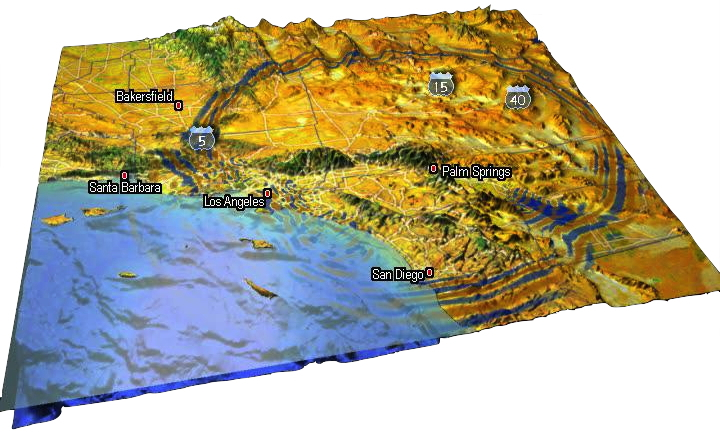

User Manual
This documentation has been automatically generated by pandoc based on the User manual (LaTeX version) in folder doc/USER_MANUAL/ (Mar 10, 2020)
For the current PDF version see: manual_SPECFEM3D_Cartesian.pdf

Table of Contents
- 01 Introduction
- 02 Getting Started
- 03 Mesh Generation
- 04 Creating Databases
- 05 Running The Solver
- 06 Fault Sources
- 07 Adjoint Simulations
- 08 Doing Tomography
- 08b Performing Full Waveform Inversion FWI Or Source Inversions
- 09 Noise Simulations
- 10 Gravity Calculations
- 11 Graphics
- 12 Running Scheduler
- 13 Changing The Model
- 14 Post Processing
- 15 Informations For Developers
- A Reference Frame
- B Channel Codes
- C Troubleshooting
- D License
- Authors
- Bug Reports
- Copyright And Version
- Notes And Acknowledgement
- Sponsors